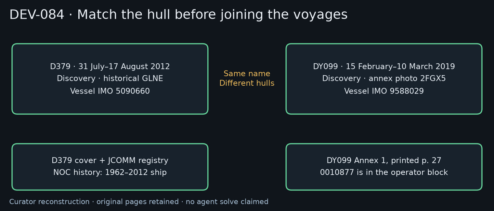
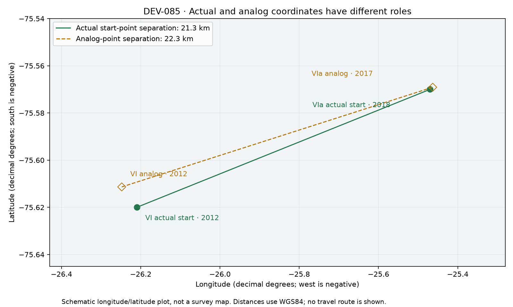

Collection and model checks
Independent adjudications: 0
Blind agent runs on these cases: 0
Lifan Hu, 20 November 2026
Click / Right: next · Left: back · N: notes · F: full screen
| Subset | Primary task | Cases |
|---|---|---|
| ER | Entity resolution | 11 |
| GL | Geolocation | 6 |
| TM | Time reconstruction | 7 |
| VC | Claim checking | 13 |
| PV | Source provenance | 10 |
| EV | Event reconstruction | 17 |
10 easy controls
50 medium hypotheses
4 hard hypotheses
One primary subset per case.
Difficulty still needs blind testing.

Join the voyages by hull identity.
Read each identifier’s field label.

The appendix gives model analogs.
The station table gives observed positions.
Synthetic example. No model result.
| Required claim | Correct? | Adequate evidence? | Supported-correct |
|---|---|---|---|
| A | Yes | Yes | 1 |
| B | Yes | No | 0 |
| C | Missing | Missing | 0 |
Correctness: 2/3 · Supported-correct: 1/3
Claims → equal-weight cases → primary subsets.
Missing claims stay in the denominator. Controls have their own track.
| Resource | What the pinned audit checked |
|---|---|
| MERRIN | 162 encrypted rows; released scorer |
| MMSearch-Plus | 63 rows inspected; card reports 311 |
| AVerImaTeC | 152 validation rows; evidence/verdict rules |
| BrowseComp-Plus | Card reports 830 queries; corpus not fetched |
Keep their native evaluators and splits.
Their rows do not increase our 64-case count.
Qwen3-VL-8B-Instruct on GPU 7. Two attempts per control.
| Control | JSON + citation-ID checks | Median time |
|---|---|---|
| Photo dates | 0/2 | 19.8 s |
| Warning times | 1/2 | 26.5 s |
| Satellite release | 2/2 | 21.4 s |
Every source fetch succeeded.
Answer errors remained.
Fixed uncounted rejected calls
and incomplete-output labels.
Image-container checks do not review every visible clue.
Pretraining exposure remains unknown.
Same model checkpoint and tools.
Same declared total resource ceilings.
Which cases and which independent reviewer?
Tool access, budgets, implementation owner and compute.
I’ll keep leading cases and evaluation.
Agent-side design advice is already available.